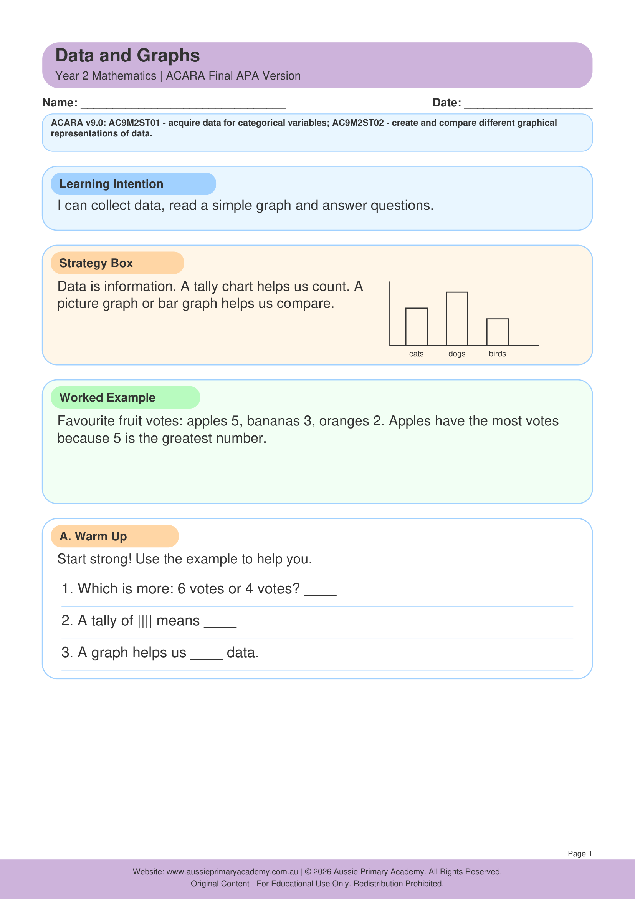

Year 2 · Maths · Statistics · Free Printable
Data and Graphs
Help Year 2 students collect, organise and interpret simple data using tables, lists and picture graphs.
Worksheet Preview

Learning Intention
Students will collect simple data and display it in lists, tables and picture graphs, then answer questions about it.
Australian Curriculum
AC9M2ST01
Collect, organise and represent data in lists, tables and picture graphs, and interpret the results.
Teacher Notes
Start with a class survey (favourite fruit, pet, colour). Students can then complete picture graphs and answer simple questions.
Skills Practised
- Collecting data
- Picture graphs
- Reading tables
- Interpreting information